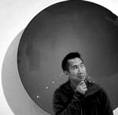

Kelvin Ma
Hi, I'm Kelvin, a Boston-based photojournalist.
I am currently a student enrolled in General Assembly's Web Development Immersive program.
When I'm not sitting in the classroom or working, you can probably find me running along the Charles River, riding my bike somewhere inside 128/I-95, working out with November Project, or cooking up something delicious in my kitchen or at the grill.
To see a sampling of my work, check out my portfolio and blog!
Contact:
- e: kelvin@kelvinmaphoto.com
- p: 847-347-6414